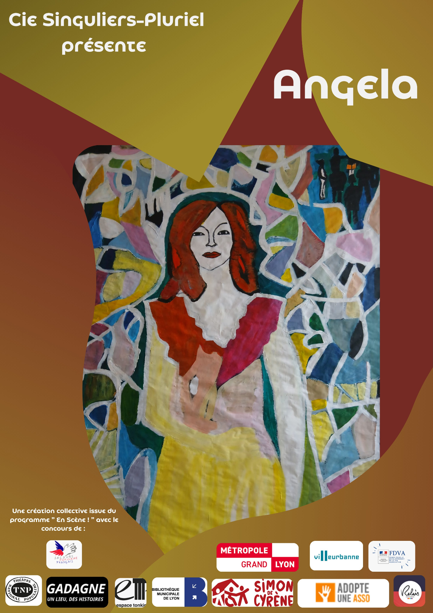

Écriture de plateau, femmes en scène : au cœur du vivant
Créer à partir du vivant, des corps, des voix et des expériences.

Depuis plusieurs mois, nous marchons.
Une marche lente, parfois invisible, faite de rencontres, de détours, de silences, de tentatives, de liens qui se tissent sans toujours savoir ce qu’ils deviendront. C’est ce que j’appelle une marche d’approche. Un temps essentiel dans mon travail de médiation artistique, notamment dans le cadre du programme En Scène : La page , mené avec le Secours Populaire Français.
Cette année, le fil rouge s’est imposé avec évidence : les femmes.
Leurs voix. Leurs corps. Leurs histoires visibles et invisibles. Leur place dans la société, dans l’espace public, dans l’intime.
Et aujourd’hui, nous y sommes : en résidence de création.
Ce moment où quelque chose prend forme
Après des mois à semer, à écouter, à expérimenter, nous entrons dans une phase particulière : celle où la matière récoltée devient création.
Pas une création figée, écrite à l’avance.
Mais une création vivante.
Nous travaillons en écriture de plateau.
L’écriture de plateau : créer à partir du vivant
L’écriture de plateau, c’est une manière de faire du théâtre (et plus largement de la création) sans texte préalable.
On ne part pas d’un script.
On part de ce qui est là :
les personnes,
leurs vécus,
leurs imaginaires,
leurs corps,
leurs émotions,
les matériaux traversés pendant les ateliers.
Sur le plateau, on improvise, on cherche, on tente.
Un geste. Une phrase. Un silence. Une posture. Un regard.
Et peu à peu, des formes émergent.
Certaines disparaissent. D’autres s’imposent. On garde, on transforme, on assemble.
C’est une écriture qui se fait avec le corps autant qu’avec les mots.
Une écriture qui accepte de ne pas savoir au début.
Une écriture qui fait confiance au processus.
Ce que cela change profondément
Dans un cadre comme celui du Secours Populaire, cette manière de créer est précieuse.
Parce qu’elle permet :
à chacun·e de partir de soi, sans avoir à “savoir jouer”,
de valoriser les expériences de vie comme matière artistique,
de redonner du pouvoir d’agir,
de créer du collectif à partir des singularités.
Ici, il ne s’agit pas de jouer un rôle.
Il s’agit de se rencontrer soi-même en présence des autres, et de transformer cette rencontre en geste artistique.
Les femmes, au centre
Cette année, les explorations nous amènent à traverser :
la place des femmes dans la ville,
les peurs intériorisées,
les injonctions,
les héritages,
la figure de la sorcière,
la solidarité,
la résistance,
la puissance.
Nous travaillons aussi autour de situations très concrètes :
dire non,
poser ses limites,
demander de l’aide,
occuper l’espace,
être regardée… et se regarder.
Et quelque chose de profondément politique émerge, sans jamais être plaqué.
Parce que cela vient du vécu.
Créer, c’est déjà transformer
Ce que je vois, jour après jour, en résidence, c’est que la création ne vient pas après le processus.
Elle est le processus.
Se tenir debout. Prendre la parole. Oser un geste. Être regardée. S’autoriser à exister autrement.
Tout cela est déjà transformation.
Et le spectacle qui naîtra — car il y aura des restitutions — ne sera pas seulement une forme artistique.
Il sera la trace d’un chemin.
Ce que je défends profondément
Dans ce travail, je ne cherche pas à faire “beau”.
Je cherche à faire juste.
Juste pour les personnes. Juste pour le moment. Juste pour ce qui cherche à émerger.
La médiation artistique, telle que je la pratique, est un espace où :
l’art devient un langage accessible,
le sensible devient une ressource,
le collectif devient un appui,
et chacun·e peut reprendre contact avec sa capacité à créer… donc à agir.
Invitation
Une répétition ouverte aura lieu le mercredi 22 avril à 16h00 au TNP – Théâtre National Populaire.
Elle se fera sur invitation uniquement.
Si vous sentez l’élan de venir découvrir ce travail en cours, vous pouvez me contacter en message privé.
Nous sommes en plein cœur de cette traversée.
Et comme souvent dans ces moments-là, tout est encore fragile, mouvant, en train de se faire.
Mais quelque chose est là.
Vivant.
La médiation artistique ouvre un espace où le sensible devient une ressource, le collectif un appui, et la création une manière de retrouver son pouvoir d’agir.